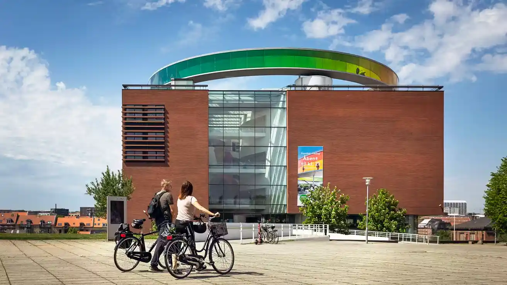

Oplevelser i København
Vi guider dig til de bedste oplevelser København har at byde på. Uanset om I er til vilde forlystelser, stille fordybning, vild shopping eller et godt måltid mad, så har vi de bedste tips til din ferie i storbyen.
Vores inspirationssider er til dig, der elsker at planlægge ferien og søger information om byen, du snart
skal besøge.
I vores forskellige guides til både Aarhus og København kan du få inspiration til nogle af de bedste
aktiviteter,
attraktioner og spisesteder, som er værd at besøge, når du er på ferie.
Vi guider dig til de bedste oplevelser København har at byde på. Uanset om I er til vilde forlystelser, stille fordybning, vild shopping eller et godt måltid mad, så har vi de bedste tips til din ferie i storbyen.

Nysgerrig på, hvad der er værd at opleve i Aarhus? Byen byder på et væld af spændende aktiviteter for alle. Vi guider dig til de bedste kulturelle og gastronomiske oplevelser, som Aarhus tilbyder.